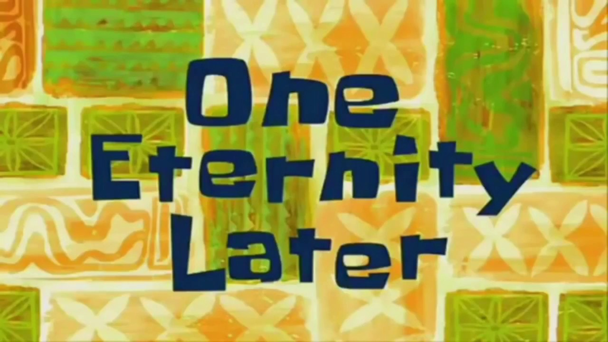

Webscraping – Part 2
Dynamic webscraping
Reminder
Do you really need scraping?
Before scraping: is there an API?
Reminder
Scraping can be divided in two steps:
- getting the HTML that contains the information
- cleaning the HTML to extract the information we want
These 2 steps don’t necessarily require the same tools, and shouldn’t be carried out at the same time.
Reminder
Why?
Webscraping takes time, and a lot of things can happen:
- your Internet connection goes down;
- the website goes down;
- any other random reason
If this happens and you didn’t save your progress, you lose everything.
We don’t have plenty of time, but we have plenty of disk storage. Use it!
Reminder
Here, we will focus mostly on how to obtain the HTML code you need on dynamic pages?
(And a bit on how to clean this HTML)
Reminder: static and dynamic pages
Static and dynamic pages
The web works with 3 languages:
- HTML: content and structure of the page
- CSS: style of the page
- JavaScript: interactions with the page
Static and dynamic pages
The web works with 3 languages:
HTML: content and structure of the page
CSS: style of the page
JavaScript: interactions with the page
Static vs dynamic
Static webpage:
- all the information is loaded with the page;
- changing a parameter modifies the URL
Dynamic webpage: the website uses JavaScript to fetch data from their server and dynamically update the page.
Example: Premier League stats.
Why is it harder to do webscraping with dynamic pages?
Webscraping a static website can be quite simple:
- you get a list of URLs;
- download the HTML for each of them;
- read and clean the HTML
and that’s it.
This is “easy” because you can identify two pages with different content just by looking at their URL.
Example: elections results in Spain from the website of El Pais


Of course, static webscraping can be challenging because we have to write good loops, good error handling, the HTML itself can be hard to clean, etc.
But in dynamic pages, there’s no obvious way to see that the inputs are different.
Example: Premier League stats


So it seems that the only way to get the data is to go manually through all pages to get the HTML.

(R)Selenium
Idea
Idea: control the browser from the command line.
“I wish I could click on this button to open a modal”
Almost everything you can do “by hand” in a browser, you can reproduce with Selenium:
| Action | Code |
|---|---|
| Open a browser | open() / navigate() |
| Click on something | clickElement() |
| Enter values | sendKeysToElement() |
| Go to previous/next page | goBack() / goForward() |
| Refresh the page | refresh() |
| Get all the HTML that is currently displayed |
getPageSource() |
Get started
Get started
In the beginning was the Word rsDriver():
If everything works fine, this will print a bunch of messages and open a “marionette browser”.

Installation issues
- Java not installed
Install the package rJavaEnv, and then run rJavaEnv::java_quick_install(version = 21).
Installation issues
- Firefox not installed/found
If you have a message saying “Could not open firefox browser”, two possible explanations:
if Firefox is not installed, install it.
if Firefox is installed but not found, it probably means that it wasn’t installed with admin rights, so you need to manually specify the location of the file:
Installation issues
- “Error in if (file.access(phantompath, 1) < 0) { : argument is of length zero”
If you have this error, this is bad news because I don’t really know how to fix it since I never had it.
You can try to follow this StackOverflow answer.
Get started
From now on, the main thing is to call <function>() starting with remote_driver$1.

Closing Selenium
The clean way to close Selenium is to run driver$server$stop() (replace driver by the name you gave at the previous step).
If you close the browser by hand and try to re-run the script, you may have the following error:
"Error in wdman::selenium(port = port, verbose = verbose, version = version, :
Selenium server signals port = 4567 is already in use."To get rid of this error, you also need to run driver$server$stop().
Exercise 1
Exercise 1
Objective: get the list of core contributors to R located here.
How would you do it by hand?
- open the browser;
- go to https://r-project.org;
- in the left sidebar, click on the link “Contributors”;
and voilà!
How can we do these steps programmatically?
Open the browser and navigate

Click on “Contributors”
This requires two things:
- find the element
- click on it
How to find an element?
Humans -> eyes
Computers -> HTML/CSS
To find the element, we need to open the console to see the structure of the page:
- right-click -> “Inspect”
- or
Ctrl+Shift+C

Then, hover the element we’re interested in: the link “Contributors”.

How can we find this link with RSelenium?
-> findElement
- class name ❌
- id ❌
- name ❌
- tag name ❌
- css selector ✔️
- link text ✔️
- partial link text ✔️
- xpath ✔️
We must make a distinction between two classes of objects: remoteDriver and webElement.
Think of remoteDriver as the browser in general: you can navigate between pages, search elements, find if an element is present on the page, etc.
see the list of available methods with ?remoteDriver
Think of webElement as a particular element on the page: you can highlight it, click it, get its text, etc.
see the list of available methods with ?webElement
Tip: You can check that you found the right element by highlighting it with highlightElement().
All of these work:
remote_driver$findElement("link text", "Contributors")$clickElement()
remote_driver$findElement("partial link text", "Contributors")$clickElement()
remote_driver$findElement(
"xpath",
"/html/body/div/div[1]/div[1]/div/div[1]/ul/li[3]/a"
)$clickElement()
remote_driver$findElement(
"css selector",
"div.col-xs-6:nth-child(1) > ul:nth-child(6) > li:nth-child(3) > a:nth-child(1)"
)$clickElement()We are now on the right page!

Last step: obtain the HTML of the page.
Do we read the HTML and extract the information in the same script?
Do we read the HTML code and extract the information in the same script?
No!
Instead, we save the HTML in an external file, and we will be able to access it in another script (and offline) to manipulate it as we want.
Click here to see the results.
The previous example was not a dynamic page: we could have used the link to the page and apply webscraping methods for static webpages.
Let’s now dive into a more complex example, where RSelenium is the only way to obtain the data.
Exercise 2: a harder & real-life example
Before using RSelenium
Using Selenium is slower than using “classic” scraping methods, so it’s important to check all possibilities before using it.
Use Selenium if:
the HTML you want is not directly accessible, i.e needs some interactions (clicking on a button, connect to a website…),
the URL doesn’t change with the inputs,
you can’t access the data directly in the “network” tab of the console and you can’t reproduce the
POSTrequest.
Example: Sao Paulo immigration museum
Steps:
- list all interactions we need to do
- check that we need Selenium
- make an example
- generalize and polish the code
List all interactions
- Open the website
- Enter “PORTUGUESA” in the input box
- Wait a bit for the page to load
- Open every modal “Ver Mais”
Check that we need Selenium
- Is there an API?
Not that I know of (and let’s assume that there isn’t one).
- Does the URL change when we enter inputs or click somewhere?
No.
- Can we get the data through the “Network” tab?
Not really and we still need RSelenium to change pages (and this is just training anyway).
Make an example
Initiate the remote driver and go to the website:
library(RSelenium)
link <- "https://www.acervodigital.museudaimigracao.org.br/livros.php"
# Automatically go the website
driver <- rsDriver(
browser = "firefox",
chromever = NULL,
# Needed since the certificate expired
extraCapabilities = list(acceptInsecureCerts = TRUE)
)
remote_driver <- driver[["client"]]
remote_driver$navigate(link)Make an example
Fill the field “NACIONALIDADE”:
library(RSelenium)
link <- "https://www.acervodigital.museudaimigracao.org.br/livros.php"
# Automatically go the website
driver <- rsDriver(
browser = "firefox",
chromever = NULL,
# Needed since the certificate expired
extraCapabilities = list(acceptInsecureCerts = TRUE)
)
remote_driver <- driver[["client"]]
remote_driver$navigate(link)
# Fill the nationality field and click on "Validate"
remote_driver$
findElement(using = "id", value = "nacionalidade")$
sendKeysToElement(list("PORTUGUESA"))Make an example
Find the button “Pesquisar” and click it:
library(RSelenium)
link <- "https://www.acervodigital.museudaimigracao.org.br/livros.php"
# Automatically go the website
driver <- rsDriver(
browser = "firefox",
chromever = NULL,
# Needed since the certificate expired
extraCapabilities = list(acceptInsecureCerts = TRUE)
)
remote_driver <- driver[["client"]]
remote_driver$navigate(link)
# Fill the nationality field and click on "Validate"
remote_driver$
findElement(using = "id", value = "nacionalidade")$
sendKeysToElement(list("PORTUGUESA"))
# Find the button "Pesquisar" and click it
remote_driver$
findElement(using = 'name', value = "Reset2")$
clickElement()Make an example
Find the button “Ver Mais” and click it:
library(RSelenium)
link <- "https://www.acervodigital.museudaimigracao.org.br/livros.php"
# Automatically go the website
driver <- rsDriver(
browser = "firefox",
chromever = NULL,
# Needed since the certificate expired
extraCapabilities = list(acceptInsecureCerts = TRUE)
)
remote_driver <- driver[["client"]]
remote_driver$navigate(link)
# Fill the nationality field and click on "Validate"
remote_driver$
findElement(using = "id", value = "nacionalidade")$
sendKeysToElement(list("PORTUGUESA"))
# Find the button "Pesquisar" and click it
remote_driver$
findElement(using = 'name', value = "Reset2")$
clickElement()
# Find the button "Ver Mais" and click it
remote_driver$
findElement(using = 'id', value = "link_ver_detalhe")$
clickElement()Make an example
Get the HTML that is displayed:
library(RSelenium)
link <- "http://www.inci.org.br/acervodigital/livros.php"
# Automatically go the website
driver <- rsDriver(
browser = "firefox",
chromever = NULL,
# Needed since the certificate expired
extraCapabilities = list(acceptInsecureCerts = TRUE)
)
remote_driver <- driver[["client"]]
remote_driver$navigate(link)
# Fill the nationality field and click on "Validate"
remote_driver$
findElement(using = "id", value = "nacionalidade")$
sendKeysToElement(list("PORTUGUESA"))
# Find the button "Pesquisar" and click it
remote_driver$
findElement(using = 'name', value = "Reset2")$
clickElement()
# Find the button "Ver Mais" and click it
remote_driver$
findElement(using = 'id', value = "link_ver_detalhe")$
clickElement()
# Get the HTML that is displayed in the modal
x <- remote_driver$getPageSource()Make an example
Exit the modal by pressing “Escape”:
library(RSelenium)
link <- "http://www.inci.org.br/acervodigital/livros.php"
# Automatically go the website
driver <- rsDriver(
browser = "firefox",
chromever = NULL,
# Needed since the certificate expired
extraCapabilities = list(acceptInsecureCerts = TRUE)
)
remote_driver <- driver[["client"]]
remote_driver$navigate(link)
# Fill the nationality field and click on "Validate"
remote_driver$
findElement(using = "id", value = "nacionalidade")$
sendKeysToElement(list("PORTUGUESA"))
# Find the button "Pesquisar" and click it
remote_driver$
findElement(using = 'name', value = "Reset2")$
clickElement()
# Find the button "Ver Mais" and click it
remote_driver$
findElement(using = 'id', value = "link_ver_detalhe")$
clickElement()
# Get the HTML that is displayed in the modal
x <- remote_driver$getPageSource()
# Exit the modal by pressing "Escape"
remote_driver$
findElement(using = "xpath", value = "/html/body")$
sendKeysToElement(list(key = "escape"))Problem
We got the content of the first modal, that’s great!
Now we just need to replicate this for the other modals of the page.
How can we distinguish one button “Ver Mais” from another?
Problem
To find the button “Ver Mais”, we used the following code:
But all buttons share the same id, so this code only selects the first button, not the others.
Solution
Use findElements() (and not findElement()).
This returns a list of elements, and we can then apply some function on each of them in a loop:
Loop through modals
Now that we have a way to open each modal, we can make a loop to get the HTML for each one:
for (i in seq_along(buttons)) {
# open the modal
buttons[[i]]$clickElement()
Sys.sleep(0.5)
# get the HTML and save it
tmp <- remote_driver$getPageSource()[[1]]
write(tmp, file = paste0("data/modals/modal-", i, ".html"))
# quit the modal (by pressing "Escape")
remote_driver$findElement(
using = "xpath",
value = "/html/body"
)$sendKeysToElement(list(key = "escape"))
}Generalize for each page
Find the button to go to the next page:
Nested loops
We know how to:
- open the website
- search for the right inputs
- open each modal and get its content
- go to the next page
Next step: compile all of this and make nested loops!
How many pages? 2348 (but just put 2-3 to avoid too many requests)
Pseudo-code:
How many pages? 2348 (but just put 2-3 to avoid too many requests)
Pseudo-code:
for (page_index in 1:3) {
# Find all buttons "Ver Mais" on the page
buttons <- remote_driver$
findElements(using = 'id', value = "link_ver_detalhe")
for (modal_index in seq_along(buttons)) {
# open modal
# get HTML and save it in an external file
# leave modal
}
# Once all modals of a page have been scraped, go to the next page
# (except if we're on the last page)
}How many pages? 2348 (but just put 2-3 to avoid too many requests)
Make the “modal loop”:
for (page_index in 1:3) {
# Find all buttons "Ver Mais" on the page
buttons <- remote_driver$
findElements(using = 'id', value = "link_ver_detalhe")
for (modal_index in seq_along(buttons)) {
# open modal
buttons[[modal_index]]$clickElement()
# Get the HTML and save it
tmp <- remote_driver$getPageSource()[[1]]
write(tmp, file = paste0("data/modals/modal-", modal_index, ".html"))
# Leave the modal
remote_driver$
findElement(using = "xpath", value = "/html/body")$
sendKeysToElement(list(key = "escape"))
}
# Once all modals of a page have been scraped, go to the next page
# (except if we're on the last page)
}How many pages? 2348 (but just put 2-3 to avoid too many requests)
Make the “page loop”:
for (page_index in 1:3) {
# Find all buttons "Ver Mais" on the page
buttons <- remote_driver$
findElements(using = 'id', value = "link_ver_detalhe")
for (modal_index in seq_along(buttons)) {
# open modal
buttons[[modal_index]]$clickElement()
# Get the HTML and save it
tmp <- remote_driver$getPageSource()[[1]]
write(tmp, file = paste0("data/modals/page-", page_index,
"-modal-", modal_index, ".html"))
# Leave the modal
remote_driver$
findElement(using = "xpath", value = "/html/body")$
sendKeysToElement(list(key = "escape"))
}
# When we got all modals of one page, go to the next page (except if
# we're on the last one)
if (page_index != 2348) {
# Give selenium a bit of time to actually find the
# element before clicking it
elem <- remote_driver$findElement("id", as.character(page_index + 1))
Sys.sleep(1)
elem$clickElement()
}
}
Great, let’s run everything!
Not so fast
Error handling
1. Catching errors
Catching errors
See the tryCatch() slides from yesterday
2. Loading times
Loading times
There are a few places where we need to wait a bit:
- after clicking on “Pesquisar”
- after clicking on “Ver Mais”
- when we go to the next page
We must put some pauses between RSelenium actions. Otherwise it will error, e.g. if we try to click on a button that isn’t loaded on the page yet.
one solution is to use Sys.sleep()
Loading times
for (page_index in 1:2348) {
# Find all buttons "Ver Mais" on the page
buttons <- remote_driver$
findElements(using = 'id', value = "link_ver_detalhe")
for (modal_index in seq_along(buttons)) {
# open modal
buttons[[modal_index]]$clickElement()
Sys.sleep(0.5)
# Get the HTML and save it
tmp <- remote_driver$getPageSource()[[1]]
write(tmp, file = paste0("data/modals/page-", page_index,
"-modal-", modal_index, ".html"))
# Leave the modal
remote_driver$
findElement(using = "xpath", value = "/html/body")$
sendKeysToElement(list(key = "escape"))
Sys.sleep(0.5)
}
# When we got all modals of one page, go to the next page (except if
# we're on the last one)
if (page_index != 2348) {
# Give selenium a bit of time to actually find the
# element before clicking it
elem <- remote_driver$findElement("id", as.character(page_index + 1))
Sys.sleep(1)
elem$clickElement()
Sys.sleep(3)
}
}Loading times
However, using Sys.sleep() is not perfect because we put arbitrary timing, e.g. 5 seconds.
Problem: what if the Internet connection is so bad that the loading takes 10 seconds?
we need a more robust solution using tryCatch()
Loading times
What we want is to check whether the loading is over, i.e whether the buttons we want to click can be found on the page.
We can use a while() loop to check this.
Loading times
Quick reminder:
ifcondition: perform the inside only if the condition is true
Loading times
In our case, we want to check whether we can find the buttons “Ver Mais”.
Are the buttons loaded?
- if no, wait 0.5 seconds (or whatever duration you want), and try again;
- if yes, go to the next step
Do this 20 times max
Important
This section didn’t work during live demo. The problem is that when we press the button to go to the next page and wait for loading, all the old “Ver mais” buttons are still here and therefore get detected.
The while loop is therefore flawed.
Loading times
# Try to find the buttons "Ver Mais"
all_buttons_loaded <- FALSE
iterations <- 0
while(!all_buttons_loaded & iterations < 20) {
tryCatch(
{
test <- remote_driver$
findElements(using = 'id', value = "link_ver_detalhe")
# If the buttons are found, update our condition to quit the loop
if (inherits(test, "list") && length(test) > 0) {
all_buttons_loaded <<- TRUE
}
},
error = function(e) {
iterations <<- iterations + 1
Sys.sleep(0.5)
}
)
}This loop will run until the buttons can be found or until we reach 20 iterations.
Loading times
for (page_index in 1:2348) {
# Try to find the buttons "Ver Mais"
all_buttons_loaded <- FALSE
iterations <- 0
while (!all_buttons_loaded & iterations < 20) {
tryCatch(
{
test <- remote_driver$findElements(
using = 'id',
value = "link_ver_detalhe"
)
if (inherits(test, "list") && length(test) > 0) {
all_buttons_loaded <<- TRUE
}
},
error = function(e) {
iterations <<- iterations + 1
Sys.sleep(0.5)
}
)
}
if (!all_buttons_loaded & iterations == 20) {
next
}
buttons <- remote_driver$findElements(
using = 'id',
value = "link_ver_detalhe"
)
for (modal_index in seq_along(buttons)) {
# open modal
buttons[[modal_index]]$clickElement()
Sys.sleep(1.5)
# Get the HTML and save it
tmp <- remote_driver$getPageSource()[[1]]
write(
tmp,
file = paste0(
"data/modals/page-",
page_index,
"-modal-",
modal_index,
".html"
)
)
# Leave the modal
remote_driver$findElement(
using = "xpath",
value = "/html/body"
)$sendKeysToElement(list(key = "escape"))
Sys.sleep(1.5)
}
# When we got all modals of one page, go to the next page (except if
# we're on the last one)
if (page_index != 2348) {
# Give selenium a bit of time to actually find the
# element before clicking it
elem <- remote_driver$findElement("id", as.character(page_index + 1))
Sys.sleep(1)
elem$clickElement()
}
}3. Display and save information
Display and save information
Webscraping takes time.
It is important to show and save information on how the webscraping is going so that we know where it went wrong for debugging.
In our case:
- show which page is being scraped;
- show which modal of this page is being scraped;
- show the status of this scraping (success/failure).
Display information
Use message() at several places in the loop to display information:
for (page_index in 1:2348) {
message(paste("Start scraping of page", page_index))
for (modal_index in buttons) {
# open modal
# get HTML and save it in an external file
# leave modal
message(paste(" Scraped modal", modal_index))
}
# Once all modals of a page have been scraped, go to the next page (except
# if we're on the last page)
message(paste("Finished scraping of page", page_index))
}Save information
Problem: what if the R session crashes?
We lose all messages!
Solution: show these messages and save them in an external file at the same time.
Save information
Example using the package logger (there are also logging, futile.logger, etc.):
# save calls to message() in an external file
log_appender(appender_file("data/modals/00_logfile"))
log_messages()
for (page_index in 1:2348) {
message(paste("Start scraping of page", page_index))
for (modal_index in buttons) {
# open modal
# get HTML and save it in an external file
# leave modal
message(paste(" Scraped modal", modal_index))
}
# Once all modals of a page have been scraped, go to the next page (except
# if we're on the last page)
message(paste("Finished scraping of page", page_index))
}Save information
What does the output look like?

Final loop
for (page_index in 1:3) {
message(paste("Start scraping of page", page_index))
# Try to find the buttons "Ver Mais"
all_buttons_loaded <- FALSE
iterations <- 0
while (!all_buttons_loaded & iterations < 20) {
tryCatch(
{
test <- remote_driver$findElements(
using = 'id',
value = "link_ver_detalhe"
)
if (inherits(test, "list") && length(test) > 0) {
all_buttons_loaded <<- TRUE
}
},
error = function(e) {
iterations <<- iterations + 1
Sys.sleep(0.5)
}
)
}
if (!all_buttons_loaded & iterations == 20) {
message(paste0("Couldn't find buttons on page ", page_index, ". Skipping."))
next
}
buttons <- remote_driver$findElements(
using = 'id',
value = "link_ver_detalhe"
)
for (modal_index in seq_along(buttons)) {
tryCatch(
{
# open modal
buttons[[modal_index]]$clickElement()
Sys.sleep(1.5)
# Get the HTML and save it
tmp <- remote_driver$getPageSource()[[1]]
write(
tmp,
file = paste0(
"data/modals/page-",
page_index,
"-modal-",
modal_index,
".html"
)
)
# Leave the modal
body <- remote_driver$findElement(using = "xpath", value = "/html/body")
body$sendKeysToElement(list(key = "escape"))
message(paste(" Scraped modal", modal_index))
},
error = function(e) {
message(paste(" Failed to scrape modal", modal_index))
message(paste(" The error was ", e))
next
}
)
Sys.sleep(1.5)
}
# When we got all modals of one page, go to the next page (except if
# we're on the last one)
if (page_index != 2348) {
# Give selenium a bit of time to actually find the
# element before clicking it
elem <- remote_driver$findElement("id", as.character(page_index + 1))
Sys.sleep(1)
elem$clickElement()
}
message(paste("Finished scraping of page", page_index))
# Wait a bit for page loading
Sys.sleep(3)
}Now what?
If everything went well, we now have a bunch of .html files in data/modals.
To clean them, we don’t need RSelenium or an internet connection. These are just text files, they are not “tied” to the website anymore.
It is also useful to keep them for reproducibility (same as when you keep the raw datasets in your project).
Make a function to clean the HTML. It returns a list containing a dataframe with the personal info, and a dataframe with the “network” of the individual.
extract_information <- function(raw_html) {
# Extract the table "Registros relacionados"
content <- raw_html %>%
html_nodes("#detalhe_conteudo") %>%
html_table() %>%
purrr::pluck(1)
relacionados <- content[16:nrow(content), ] %>%
mutate(
across(
.cols = everything(),
.fns = ~ {
ifelse(.x == "", NA, .x)
}
)
)
colnames(relacionados) <- c(
"Livro",
"Pagina",
"Familia",
"Chegada",
"Sobrenome",
"Nome",
"Idade",
"Sexo",
"Parentesco",
"Nacionalidade",
"Vapor",
"Est.Civil",
"Religiao"
)
# Extract text information from "registro de matricula" and create a
# dataframe from it
name_items <- raw_html %>%
html_elements(
xpath = '//*[@id="detalhe_conteudo"]/table[1]/tbody/tr/td/strong'
) %>%
html_text2() %>%
gsub("\\n", "", .) %>%
strsplit(split = "\\t") %>%
unlist()
value_items <- raw_html %>%
html_elements(
xpath = '//*[@id="detalhe_conteudo"]/table[1]/tbody/tr/td/div'
) %>%
html_text2()
registro <- data.frame() %>%
rbind(value_items) %>%
as_tibble()
colnames(registro) <- name_items
return(
list(
main = registro,
related = relacionados
)
)
}Apply this function to all files:
library(tidyverse)
library(rvest)
# Get all paths to the html files
list_html_files <- list.files(
"data/modals",
pattern = "page",
full.names = TRUE
)
# Apply the previous function to each of those file
list_out <- lapply(list_html_files, function(x) {
read_html(x) |>
extract_information()
})
# Aggregate the results in two (single) datasets
main <- data.table::rbindlist(purrr::map(list_out, 1)) |>
as_tibble()
relations <- data.table::rbindlist(purrr::map(list_out, 2)) |>
as_tibble()Summary
Seleniumin general is a very useful tool but should be used as a last resort:
- APIs, packages
- static webscraping
- custom
POSTrequests (link in conclusion)
- In my (limited) experience:
- 1/4 of the time is spent on making a small example work;
- 1/4 of the time is spent on generalising this example (loops, etc.)
- 1/2 of the time is spent on debugging.
Catching errors and recording the scraping process IS important.
Parallelization
Use parallelization to open several browsers at the same time and scrape the data faster.
I never tested this, and there could be some issues (browser crashes, etc.)
If you want to explore it:
article by Appsilon (at the end)
Ethics
Pay attention to a website’s Terms of Use/Service.
Some websites explicitly say that you are not allowed to programmatically access their resources.

Ethics
Be respectful: make the scraping slow enough not to overload the server.
Not every website can handle tens of thousands of requests very quickly.
Tip
For static webscraping, check out the package polite.
Other tools
Seleniumis also available in Python.
- Python also has a library called
playwright(never used myself).
Conclusion
Code on GitHub: https://github.com/etiennebacher/innsbruck_teaching_may_2025
Good resources
Article from Appsilon:
https://appsilon.com/webscraping-dynamic-websites-with-r/
Article from Ivan Millanes:
https://ivanmillanes.netlify.app/post/2020-06-30-webscraping-with-rselenium-and-rvest/
Using POST requests instead of RSelenium: https://www.etiennebacher.com/posts/2023-05-09-making-post-requests-with-r/
Appendix
Appendix
For reference, here’s the code to extract the list of contributors:
library(rvest)
html <- read_html("contributors.html")
bullet_points <- html %>%
html_elements(css = "div.col-xs-12 > ul > li") %>%
html_text()
blockquote <- html %>%
html_elements(css = "div.col-xs-12.col-sm-7 > blockquote") %>%
html_text() %>%
strsplit(., split = ", ")
blockquote <- blockquote[[1]] %>%
gsub("\\r|\\n|\\.|and", "", .)
others <- html %>%
html_elements(xpath = "/html/body/div/div[1]/div[2]/p[5]") %>%
html_text() %>%
strsplit(., split = ", ")
others <- others[[1]] %>%
gsub("\\r|\\n|\\.|and", "", .)
all_contributors <- c(bullet_points, blockquote, others)Appendix
Appendix
Bonus: get the data from each modal on the museum website by performing the POST request yourself.
Go to the tab “Network” in the developer console, and then click on one of the “Ver Mais” button to display the modal.
Appendix
Clicking on this button triggers two POST requests:
- one for the individual information;
- one for the “network” of the individual.

Appendix
Clicking on one of the POST requests displays important information:
- the request, what we send to the server;
- the response, what the server sends back to us.
The request contains specific parameters needed to tell the server which data we need.
Appendix
Let’s rebuild this POST request from R using the package httr.
Appendix
Extract the data from the server response:
library(httr)
library(xml2)
library(jsonlite)
# make the POST request with the parameters needed
x <- POST(
"http://www.arquivoestado.sp.gov.br/site/acervo/memoria_do_imigrante/getHospedariaDetalhe",
body = list(
id = "92276"
),
encode = "multipart"
)
# convert output to a list
out <- as_list(content(x))
# convert output to a dataframe
fromJSON(unlist(out))$dadosYour turn
Do the same thing with the second POST request, which has 3 parameters instead of one.
Session information
─ Session info ───────────────────────────────────────────────────────────────
setting value
version R version 4.5.0 (2025-04-11)
os Ubuntu 24.04.2 LTS
system x86_64, linux-gnu
ui X11
language (EN)
collate en_US.UTF-8
ctype en_US.UTF-8
tz Europe/Paris
date 2025-06-02
pandoc 3.1.3 @ /usr/bin/ (via rmarkdown)
quarto 1.6.40 @ /home/etienne/.local/lib/python3.12/site-packages/quarto_cli/bin/quarto
─ Packages ───────────────────────────────────────────────────────────────────
package * version date (UTC) lib source
cli 3.6.4 2025-02-13 [1] RSPM
digest 0.6.37 2024-08-19 [1] RSPM
evaluate 1.0.3 2025-01-10 [1] RSPM
fastmap 1.2.0 2024-05-15 [1] RSPM
htmltools 0.5.8.1 2024-04-04 [1] RSPM
jsonlite 2.0.0 2025-03-27 [1] RSPM
knitr 1.50 2025-03-16 [1] RSPM
rlang 1.1.6 2025-04-11 [1] CRAN (R 4.5.0)
rmarkdown 2.29 2024-11-04 [1] RSPM
sessioninfo 1.2.3 2025-02-05 [1] RSPM
xfun 0.52 2025-04-02 [1] RSPM
yaml 2.3.10 2024-07-26 [1] RSPM
[1] /home/etienne/R/x86_64-pc-linux-gnu-library/4.5
[2] /opt/R/4.5.0/lib/R/library
──────────────────────────────────────────────────────────────────────────────